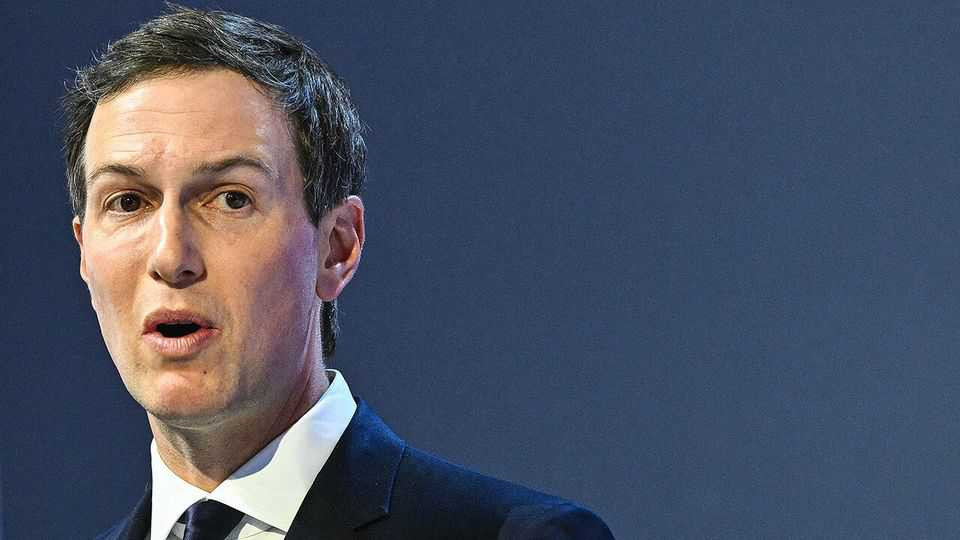
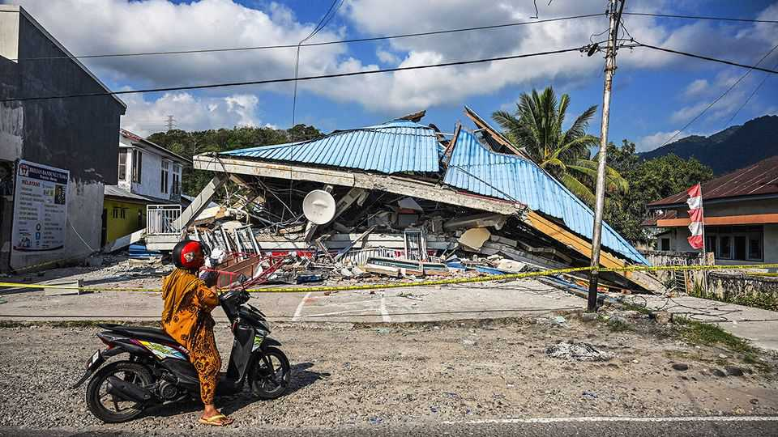

Politics

Aug 20th 2026
Jared Kushner, Donald Trump’s Middle East envoy, travelled to the region in a bid to revive America’s Gaza peace plan. He met leaders from Hamas in Egypt before travelling to Israel for talks with Binyamin Netanyahu, Israel’s prime minister. Mr Kushner said there could soon be progress on disarming Hamas, but added that “co-operation from both sides” was necessary. The plan has faltered because Hamas refuses to disarm before the Israel Defence Forces withdraw from all positions in Gaza and Israel refuses to withdraw until Hamas has disarmed completely.
A deadline for hammering out a final peace deal between America and Iran passed without an agreement. Mr Trump threatened to bomb Oman, an American ally, if it got in the way of talks with Iran. Iran has said it is close to reaching a deal with Oman on shipping in the Strait of Hormuz. Attacks on vessels transiting the strait continued; one sailor was killed. The United Arab Emirates, another American ally, imposed a trade embargo on Iran, accusing it of launching missiles at its territory for the first time since early May. Iran claimed the attack was a “false flag operation” carried out by America and Israel.
Hakainde Hichilema won a second term as president of Zambia in an election marred by inflated vote counts for the incumbent in various constituencies and the killing of an opposition politician in a raid by government forces. Mr Hichilema would probably still have won if the election had been conducted fairly. But Zambia’s image as a relatively well-functioning multi-party democracy has been tarnished.
The Ebola outbreak in the Democratic Republic of Congo became the country’s deadliest, with 2,378 deaths and more than 5,000 confirmed cases as of August 18th. The WHO says the Ebola epidemic is on track to become the worst on record, surpassing the west African outbreak a decade ago, which killed more than 11,000 people.
Police in Morocco arrested over 110 people who were trying to cross into Ceuta, a Spanish territory in north Africa. The police said almost all the migrants had travelled up from sub-Saharan Africa. In late July 72,000 migrants overran Ceuta, sparking a debate in the European Union about how best to deal with illegal immigration. All but 2,000 of those migrants were swiftly returned to Morocco, but those who remained held a protest in Ceuta recently demanding asylum.
Russian authorities stepped up their crackdown on Yabloko, a liberal anti-war party. A court in the city of Pskov sentenced Lev Shlosberg, the party’s deputy leader, to 11 years in a penal colony for “discrediting” the army after he took part in an online debate about the war in Ukraine. The judge interrupted Mr Shlosberg’s closing speech, in which he called for a ceasefire. His party has been barred from contesting parliamentary elections.
Mykhailo Fedorov, who was sacked as Ukraine’s defence secretary last month, called for an election. In a video posted on YouTube, Mr Fedorov said Ukraine should “find a legal, safe and realistic mechanism that will allow Ukraine to renew its full democratic process even in the conditions of a long war”. An election hasn’t been held since 2019. Meanwhile, corruption allegations continued to afflict the government of Volodymyr Zelensky. The president sacked one of his top aides after her house was raided in a money-laundering investigation.
The Russian embassy in London warned of “consequences” for Britain following the latest reports that Ukraine was deploying British-made drones against Russia. In response, Andy Burnham, the new British prime minister, said his government would continue “to support Ukraine 100%”.
The University of Cambridge insisted it had continued to provide mental-health support to Jason Arday after he resigned amid accusations of plagiarism in his work and claims that he fabricated his life story. Mr Arday, who was a full professor at Cambridge, was found dead following weeks of intense scrutiny about his thin academic record. Lord Smith, the university’s chancellor, blamed a “racist feeding frenzy” for his death. Nonsense, rebutted those who investigated Mr Arday, he was a public figure who was rightly held to account.
Prince Harry and Meghan Markle are reportedly moving back to Britain so that their two children can attend school in the country. They will not be reinstated as working royals. The couple have had fractious relations with the rest of the royal family, which resulted in them relocating to California, a decision that came to be known as Megxit.
Nigel Farage, the leader of Britain’s populist-right Reform UK, was re-elected to his constituency. No major parties contested the seat, but a record 33 others did, mostly independents and novelty candidates led by serial candidate, Count Binface. Mr Farage had triggered the by-election by resigning as an MP in what he hoped would be a referendum on an investigation into a £5m ($6.8m) political donation. The Parliamentary Commissioner for Standards resumed the investigation immediately after his re-election. Mr Farage refused to attend the by-election count, claiming the police had advised against it. That prompted some criticism from within his party. Tim Montgomerie, a prominent member, was suspended for saying that Mr Farage was still giving off a “far too dominant aggrieved tone”.
Donald Trump took South Korea by surprise when he said America would scale down the joint military exercises it holds with Korean forces. The annual drills were subsequently cut short by six days. The president listed a litany of complaints: the exercises are costly, they send a “hostile” signal to North Korea, and South Korea has not helped with the “denuclearisation” of Iran. Mr Trump said he had a “very good relationship” with Kim Jong Un, the North’s dictator. Reports suggest he wants another meeting with Mr Kim, whom Mr Trump met in his first term to much fanfare; their summits produced nothing.
India’s home secretary, Amit Shah, gave details of the arrest of more than 200 “terror operatives” who were planning “subversive attacks” surrounding the country’s Independence Day celebrations. Mr Shah said the operatives were supported by Pakistan’s intelligence agency, a claim that was roundly rejected by the Pakistani government.

An earthquake in Indonesia’s East Nusa Tenggara province killed at least 68 people. It was the country’s worst earthquake since 2022, when hundreds of people were killed in West Java.
Donald Trump suspended for three days the 50% tariffs that were due to be imposed on Canadian goods, saying a deal with Canada was close that would tackle American concerns on a range of issues, such as duties on car imports.
The Democratic National Committee announced the early part of its primary calendar for the 2028 presidential election. South Carolina, which has a large black electorate, will kick things off on January 22nd 2028. It will be followed by Nevada, a swing state, on February 1st. New Hampshire, which traditionally holds the first primary, gets its turn on February 8th. Iowa, whose caucuses long kicked off the nominating process, wasn’t included. State Democrats may try to bypass the official schedule.